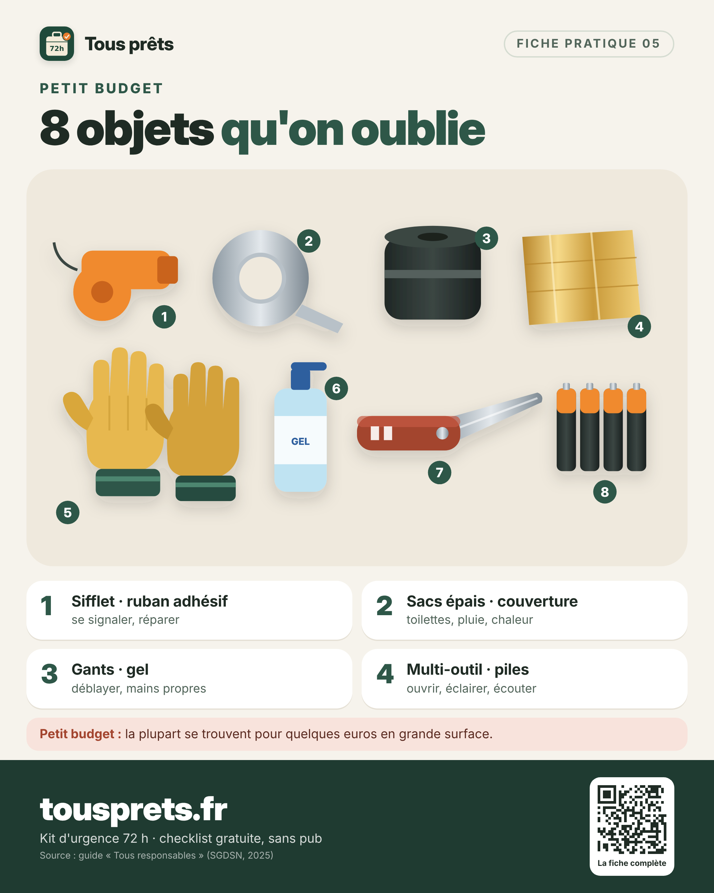
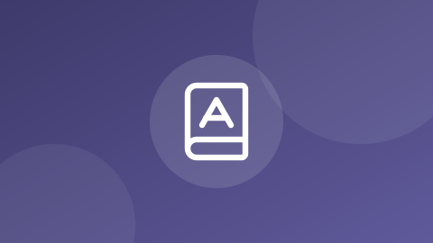
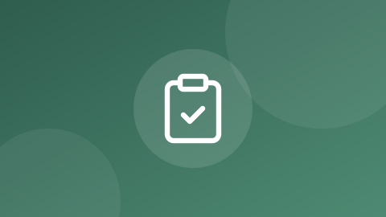

Kit d'urgence : les questions pratiques, des réponses claires
Les questions qu'on se pose vraiment quand on prépare son kit, et que les listes officielles ne détaillent pas : comment communiquer sans réseau, que faire des toilettes sans eau, où ranger tout ça dans un petit appartement. Des réponses courtes, vérifiées, sans dramatiser.
Questions sur l’application (installation, hors ligne, données) : voir l’aide sur l’application.

Informations pratiques, sources officielles (guide « Tous responsables » (SGDSN, 2025), service-public.fr, Apple, constructeurs PMR446). Elles ne remplacent pas les consignes des autorités. En cas d'urgence, appelez le 112 et suivez les consignes de la préfecture, de la radio et de FR-Alert.
Plus de réseau, plus d'internet
Mon téléphone ne capte plus : comment être prévenu des consignes ?
Par la radio. Une radio à piles ou à manivelle capte la radio locale du service public (« ici », ex-France Bleu), qui relaie les consignes des autorités. Les sirènes et les messages par haut-parleur de la mairie restent aussi actifs. FR-Alert, lui, a besoin du réseau mobile. Voir la radio à piles.
Mon opérateur ne capte plus : puis-je quand même appeler le 112 ?
En France, les numéros directs restent le 15 (Samu), le 17 (police) et le 18 (pompiers) ; le 112 fonctionne partout en Europe. Oui, l'appel passe si un autre opérateur capte. Le téléphone emprunte automatiquement le réseau disponible pour un appel d'urgence, même sans forfait. Attention : en France, il faut une carte SIM dans le téléphone. Un vieux téléphone sans SIM ne joint pas le 112. S'il n'y a aucun réseau du tout, l'appel ne passe pas.


Sans réseau mobile : talkies-walkies ou satellite, est-ce utile ?
Appelez le 112
Les talkies PMR446 s'utilisent sans licence ni abonnement en France et en Europe, avec une puissance limitée à 0,5 W. Ils permettent de garder le contact dans un immeuble, une rue ou un quartier quand le réseau mobile tombe.
Portée réelle : les boîtes annoncent 5 à 10 km, mais en ville comptez plutôt quelques centaines de mètres à 1 km. Prévoyez des piles de rechange (l'autonomie baisse au froid) et convenez à l'avance d'un canal. Ce sont des canaux ouverts : n'y donnez pas d'informations sensibles (absence du logement, codes). Ils ne permettent pas de joindre les secours.
Oui avec certains téléphones : depuis décembre 2022, les iPhone 14 et plus récents peuvent envoyer un message aux secours par satellite en France, et certains Pixel récents proposent le SOS par satellite selon le modèle et le pays : vérifiez dans les réglages de votre téléphone. C'est un dernier recours : composez d'abord le 112, et si l'appel ne passe pas, le téléphone propose le satellite. Il faut être dehors, ciel dégagé. Testez la démonstration dans les réglages.
Comment se retrouver en famille sans téléphone ?
Décidez maintenant d'un lieu de rassemblement près de chez vous et d'un second hors du quartier, et d'une personne contact qui centralise les nouvelles. Écrivez les numéros importants sur papier, dans le kit et dans chaque sac. Le guide « Tous responsables » demande de prévoir ces lieux et ces numéros dans son plan personnel.
Eau et hygiène
L'eau est coupée : comment faire avec les toilettes (toilettes sèches avec un seau) ?
Si les égouts fonctionnent (seule l'eau du robinet est coupée) : versez d'un coup un seau d'eau non potable (pluie, eau de bain) au fond de la cuvette pour déclencher la chasse, en restant près de la cuvette pour limiter les éclaboussures. Ne touchez pas à votre réserve d'eau potable.
Si les égouts sont hors service (inondation, consigne de la mairie) : n'utilisez plus les toilettes et passez aux toilettes sèches avec un seau, ci-dessous.
- Un seau solide de 15 à 20 litres, avec couvercle, installé dans une pièce aérée (salle de bain, balcon couvert).
- Deux sacs poubelle épais glissés l'un dans l'autre, rabattus sur le bord du seau.
- Une assise : une frite de piscine fendue dans la longueur, posée sur le bord et fixée avec du ruban adhésif pour qu'elle ne glisse pas, ou un vieil abattant. Le seau doit être bien stable.
- Une couche de matière sèche au fond, puis 1 à 2 poignées après chaque passage : sciure de bois non traité, litière végétale, litière pour chat (agglomérante ou minérale, très efficace contre les odeurs), copeaux ou terre sèche. Elle absorbe et limite les odeurs.
- Séparer l'urine si possible (bouteille, second seau) : beaucoup moins d'odeur et un sac moins lourd.
- Garder le même sac pour plusieurs passages en recouvrant à chaque fois de matière sèche, puis le changer à moitié plein : le nouer, le mettre dans un contenant fermé, au frais et à l'écart du logement, des points d'eau et des potagers. Ne le jetez pas avec les ordures ménagères sans consigne : suivez celles de la mairie.
- Hygiène : gel hydroalcoolique à chaque passage, couvercle fermé entre deux utilisations. Le gel ne remplace pas le savon sur des mains sales : lavez-les à l'eau et au savon dès que possible.
À avoir dans le kit : un seau à couvercle, des sacs poubelle épais et des liens, un sac de litière (végétale ou pour chat) ou de sciure, du papier toilette, du gel hydroalcoolique.


Le chauffe-eau peut-il servir de réserve d'eau ?
Oui. Un chauffe-eau (ballon, cumulus) contient souvent 100 à 300 litres d'eau du réseau. Si l'eau du robinet est coupée, cette eau reste disponible. Encore faut-il savoir la récupérer : repérez dès aujourd'hui l'arrivée d'eau froide et l'endroit où se fait la vidange. Sur beaucoup de chauffe-eau, elle passe par le groupe de sécurité, souvent relié à l'évacuation : il faut pouvoir glisser un récipient dessous.
- Coupez l'alimentation : le disjoncteur du chauffe-eau (ou le gaz). Un chauffe-eau qui chauffe à vide s'abîme.
- Fermez la vanne d'arrivée d'eau froide du ballon.
- Ouvrez un robinet d'eau chaude dans le logement : l'air entre et l'eau peut sortir.
- Laissez refroidir plusieurs heures si possible : l'eau peut être brûlante.
- Vidangez dans un récipient par le groupe de sécurité (position vidange) ou par le robinet en bas du ballon, selon le modèle, en vérifiant d'abord qu'un récipient tient dessous. Refermez ensuite.
Peut-on la boire ? C'est l'eau du réseau, mais elle peut contenir du calcaire et des dépôts. Utilisez-la d'abord pour l'hygiène et la cuisine ; ne la buvez qu'en dernier recours, après l'avoir laissée reposer et fait bouillir. L'ébullition tue les microbes mais n'enlève pas une pollution chimique. Jamais pour les biberons : utilisez une eau en bouteille adaptée aux nourrissons.
Si les autorités annoncent que l'eau du robinet est polluée, fermez tout de suite la vanne d'arrivée générale du logement : l'eau propre du ballon ne sera pas remplacée par de l'eau polluée.
Gardez la notice de votre chauffe-eau, et faites-vous montrer les vannes par un plombier lors d'un entretien si vous avez un doute.


Comment se laver sans eau courante ?
Lingettes, gel hydroalcoolique pour les mains, et un gant avec un peu d'eau pour le reste. La réserve de 6 litres par personne sert à boire : prévoyez de l'eau en plus pour l'hygiène si vous avez la place. Voir combien d'eau stocker.
À quoi sert le vinaigre blanc en situation de crise ?
C'est un produit simple, bon marché et polyvalent, utile quand l'eau chaude, l'électricité ou les produits ménagers manquent. Il faut seulement savoir ce qu'il fait, et ce qu'il ne fait pas.
Deux vinaigres différents. Le vinaigre ménager (souvent 12 à 14 %) sert au nettoyage : il ne se mange pas. Le vinaigre d'alcool alimentaire (environ 6 à 8 %) sert en cuisine. Lisez l'étiquette et gardez-les à des endroits différents.
Pour le nettoyage :
- Détartrer : bouilloire, robinets, pommeau de douche, cuvette des toilettes.
- Dégraisser et faire briller : vitres, miroirs, plans de travail en inox ou stratifié, dilué à parts égales avec de l'eau.
- Désodoriser : réfrigérateur, poubelle, seau des toilettes sèches. Un bol de vinaigre posé dans une pièce absorbe une partie des odeurs.
- Linge : un peu de vinaigre au rinçage, à la main ou en machine, assouplit le linge et limite les odeurs.
Pour l'hygiène et la désinfection : le vinaigre réduit une partie des microbes sur les surfaces, mais ce n'est pas un désinfectant au sens officiel. Il ne remplace ni l'eau de Javel diluée, ni le savon et l'eau pour les mains. Pour une plaie, utilisez un antiseptique de la trousse de secours, jamais du vinaigre.
Pour la conservation des aliments (vinaigre alimentaire uniquement) :
- Légumes au vinaigre : cornichons, oignons, carottes ou chou crus se gardent plus longtemps dans un bocal propre, bien couverts de vinaigre. Gardez le bocal au frais une fois ouvert.
- Marinades et assaisonnement : il relève une conserve de légumes ou de lentilles et remplace le citron.
- Rincer fruits et légumes : l'eau potable suffit. Le vinaigre n'est pas nécessaire et ne rend pas sûre une eau douteuse.
Les précautions :
- Ne mélangez jamais vinaigre et eau de Javel : le mélange dégage un gaz toxique (chlore). Rincez entre les deux produits.
- À éviter sur le marbre, la pierre naturelle, le bois ciré, la fonte et les joints en caoutchouc : l'acide les abîme.
- Le vinaigre ne rend pas l'eau potable : pour cela, voir comment purifier l'eau.
- Rangez-le hors de portée des enfants et évitez le contact avec les yeux.
Une bouteille d'un litre de vinaigre ménager suffit largement pour le kit ; ajoutez une bouteille de vinaigre alimentaire à vos réserves de cuisine.
Filtre à eau ou pastilles : faut-il en avoir ?
La priorité, ce sont les bouteilles d'eau. Le guide officiel prévoit les pastilles de décontamination en dernier recours, en suivant strictement leur notice. Un filtre de randonnée arrête une partie des microbes mais pas les produits chimiques : après une inondation, l'eau peut être polluée par des hydrocarbures ou des produits ménagers. Suivez les consignes de la mairie avant de boire l'eau du robinet ou une eau filtrée.
Après une inondation, comment nettoyer et désinfecter sa maison sans danger ?
Enfilez des gants épais, des bottes, un masque et des lunettes de protection avant de toucher quoi que ce soit, car l'eau des crues est souvent souillée par les égouts ou des produits chimiques. Évacuez d'abord la boue et jetez tout ce qui est poreux et a été trempé : matelas, peluches, tapis, plaques de plâtre ou isolants, qui développent vite des moisissures toxiques. Nettoyez les surfaces dures (carrelage, métal, plastique) à l'eau chaude et au détergent classique, rincez, puis désinfectez avec une solution d'eau de Javel diluée (en respectant le dosage indiqué sur l'étiquette). Attention : ne mélangez jamais l'eau de Javel avec de l'ammoniaque, du vinaigre blanc ou un détartrant, cela dégage un gaz toxique. Aérez largement les pièces pendant et après le nettoyage.
Que faire si l'eau du robinet est troublée ou a un goût bizarre, sans consigne officielle ?
Après des travaux sur le réseau, de fortes pluies ou une coupure de pression, l'eau du robinet peut parfois couler trouble ou colorée. Par prudence, ne la buvez pas et ne l'utilisez pas pour cuisiner, vous brosser les dents ou préparer un biberon tant que vous n'avez pas vérifié la situation. Consultez le site de votre mairie, de votre préfecture ou de votre distributeur d'eau (ses coordonnées figurent sur votre facture d'eau) et écoutez la radio locale. Si l'eau est simplement légèrement trouble après une remise en eau sans alerte sanitaire, laissez-la couler à froid quelques minutes jusqu'à ce qu'elle redevienne limpide. En revanche, si des intempéries ou une pollution sont en cours, utilisez uniquement votre réserve d'eau en bouteille (6 litres par personne pour 72 heures) ou faites bouillir l'eau à gros bouillons pendant une minute avant consommation.
Rangement et achats
Comment bien stocker les aliments et l’eau du kit ?
Rangez-les dans un endroit sec, à l’abri de la lumière et à température ambiante, loin des sources de chaleur. L’espace doit être propre et rangé. Organisez le stock par dates : placez devant les produits dont la date limite est la plus proche et mettez les nouveaux achats derrière. Consommez ceux de devant au quotidien et rachetez aussitôt : le stock tourne sans gaspillage. Voir les aliments qui se gardent sans frigo.
Je vis dans un petit appartement : où ranger le kit ?
- Le sac d'évacuation près de l'entrée ou dans le placard le plus proche de la porte.
- L'eau au sol, à l'abri de la lumière : sous le lit, au fond d'un placard. C'est lourd, ne la mettez pas en hauteur.
- Les conserves sous le lit, dans un bac.
- Le léger (couverture de survie, piles, lampe, papiers) en hauteur ou dans un range-chaussures à suspendre derrière une porte.
- Évitez la cave si votre logement est en zone inondable, et les endroits chauds (près du four, du radiateur).
Voir aussi le kit selon votre logement.


Quels petits objets pas chers oublie-t-on souvent ?
- Un sifflet : pour signaler sa présence sans s'épuiser à crier.
- Du ruban adhésif solide : réparer, colmater, étiqueter.
- Des sacs poubelle épais : toilettes de secours, imperméable, protection des papiers.
- Une couverture de survie (citée par le guide officiel).
- Des gants de travail et un poncho de pluie.
- Du gel hydroalcoolique.
- Un couteau multifonction et un ouvre-boîte (cités par le guide).
- Des piles au bon format pour la lampe et la radio.
La plupart se trouvent pour quelques euros en grande surface. Voir le kit pas cher.


Faut-il prévoir plus de 72 heures ?
Le guide français demande 72 heures, la durée pendant laquelle les secours peuvent être débordés. D'autres pays visent plus long : la Suède, la Norvège ou l'Estonie demandent environ une semaine. Commencez par 72 heures bien faites, puis élargissez petit à petit en achetant un peu plus de ce que vous mangez déjà.
Quels aliments sont impérissables ?
Peu d'aliments sont vraiment impérissables. S'ils restent fermés, au sec, au frais et à l'abri de la lumière et des insectes, ceux-ci se gardent des années :
- Quasi illimité : sel, sucre blanc, miel (il peut cristalliser : c'est normal, il suffit de le tiédir au bain-marie), vinaigre blanc.
- Plusieurs années : riz blanc, pâtes sèches, légumes secs (lentilles, pois chiches : plus ils sont vieux, plus ils sont longs à cuire), café soluble, thé, cacao en poudre.
- Conserves en boîte métallique : souvent consommables bien après la date si la boîte est intacte.
La règle des dates : « À consommer de préférence avant » (DDM) signale une possible perte de goût ou de texture, pas un danger. On peut manger le produit après cette date. « À consommer jusqu'au » (DLC) est une limite à respecter. Jetez sans goûter toute boîte bombée, rouillée, cabossée ou qui fuit.
Pour le kit 72 h, privilégiez ce qui se mange sans cuisson : riz, pâtes et légumes secs demandent de l'eau et du feu. Voir les aliments sans cuisson. Faites tourner votre stock : consommez le plus ancien, remplacez-le, et vérifiez le tout deux fois par an.
Faut-il prévoir des épices, des bonbons et du chocolat dans son kit ?
Oui, en petite quantité. Pendant une crise, on mange souvent froid : conserves, biscuits, compotes, plusieurs jours de suite. Quelques petits plaisirs aident à garder le moral, donnent envie de manger suffisamment et rassurent les enfants. Ils ne remplacent pas la nourriture de base : ils la rendent plus agréable.
- Épices et condiments : sel, poivre, herbes séchées, curry ou paprika, moutarde, ketchup ou mayonnaise en portions individuelles. Ils changent le goût d'une boîte de lentilles, de thon ou de maïs, et évitent la monotonie des repas.
- Bonbons et sucreries : bonbons, pâtes de fruits, barres de céréales, miel en dosettes. Un apport d'énergie rapide et un réconfort, surtout pour les enfants.
- Chocolat : de préférence noir, en tablette, qui se conserve mieux que le chocolat au lait. À la chaleur, il peut blanchir : c'est un défaut d'aspect, pas un danger. Rangez-le au sec et au frais.
- Boissons chaudes, si vous pouvez chauffer de l'eau en sécurité : café soluble, thé, chocolat en poudre, cubes de bouillon.
Les précautions :
- Diabète : demandez à votre médecin ce qu'il faut prévoir pour corriger une hypoglycémie, et gardez-le dans le kit.
- Allergies : lisez les étiquettes, notamment pour les arachides et les fruits à coque.
- Jeunes enfants : évitez les bonbons durs et les petits morceaux, qui peuvent provoquer un étouffement.
- Dents : gardez une brosse à dents et du dentifrice dans le kit.
- Conservation : choisissez des emballages fermés ou des portions individuelles, vérifiez les dates et faites tourner ces produits avec le reste du stock.
Pour composer des repas complets sans cuisson, voir les aliments sans cuisson et la checklist à imprimer.
Se préparer, ça coûte cher ?
Non. Un kit d'urgence n'a pas besoin de matériel coûteux : les articles premier prix font très bien l'affaire. Eau en bouteille, conserves, biscuits, compotes, piles, lampe, trousse de secours de base : on les trouve en marque distributeur ou en entrée de gamme dans n'importe quel supermarché.
- Commencez par ce que vous avez déjà : lampe, couverture, radio, médicaments habituels, papiers. Beaucoup de foyers ont déjà une bonne partie du kit sans le savoir.
- Achetez petit à petit : un ou deux articles de plus à chaque course, plutôt que tout d'un coup.
- Choisissez ce que vous mangez déjà : vous le consommerez avant la date et le remplacerez, rien n'est perdu.
- Évitez les « kits de survie » tout faits vendus cher : ils reviennent souvent plus cher qu'un kit composé vous-même et ne contiennent pas toujours l'essentiel, comme l'eau ou vos médicaments.
Un rappel pratique : ayez toujours deux ouvre-boîtes manuels, au cas où l'un casse ou se perd. Sans ouvre-boîte, vos conserves deviennent inutilisables. Un modèle premier prix suffit ; rangez-en un dans le kit et l'autre dans la cuisine.
Pour une liste d'achats progressive à petit budget, voir le kit 72 h pas cher et la checklist à imprimer.
Quels papiers mettre dans le kit d'urgence ?
Des photocopies, dans une pochette étanche : pièces d'identité, livret de famille, carte Vitale, ordonnances, contrat d'assurance habitation, coordonnées bancaires et liste des numéros utiles. Gardez aussi une copie numérique dans un espace sécurisé en ligne, et quelques photos de votre logement et de vos biens : elles aident pour la déclaration de sinistre à l'assurance.
Le gouvernement distribue-t-il un kit d'urgence ? Combien coûte-t-il ?
Le gouvernement ne distribue pas de kit : le guide « Tous responsables » (gratuit) donne une liste à rassembler soi-même. Méfiez-vous des offres payantes présentées comme « kit officiel ». Le coût dépend de ce que vous avez déjà : lampe, couteau, couverture, trousse de secours sont souvent à la maison. Il reste surtout l'eau, quelques conserves, une radio et des piles. Voir le kit 72h pas cher.
Pourquoi le gouvernement demande-t-il de tenir 72 heures ?
Parce que lors d'une crise majeure (inondation, tempête, panne géante, cyberattaque), les secours ne peuvent pas être partout à la fois : ils vont d'abord aux personnes en danger. Les premiers jours, chaque foyer doit pouvoir boire, manger, avoir chaud et se soigner seul. Voir ce que dit le guide.
Et si le paiement par carte ne fonctionne plus ?
Sans électricité ou sans réseau, les terminaux de paiement et les distributeurs peuvent s'arrêter. Le guide prévoit de l'argent liquide dans le kit : gardez de petites coupures et de la monnaie, assez pour quelques jours de courses essentielles.
J'habite en appartement : où ranger mon kit d'urgence ?
Pas besoin d'une cave ou d'un garage : il suffit d'utiliser les espaces perdus, en rangeant chaque chose selon son poids et son usage. Étagères en hauteur fixées au mur : les packs d'eau et les conserves en bas, le plus léger au-dessus. Sous le lit, des bacs plats : couvertures, vêtements chauds, trousse de secours. Derrière une porte, un range-chaussures à poches : lampes, piles, radio, barres de céréales, toujours à portée de main. Au fond d'un placard : ce qui sert rarement et prend de la place, comme un sac de couchage. Un pouf ou un banc coffre : couvertures et vêtements de rechange. Le dessus des placards : seulement des choses légères. Une valise vide : votre sac d'évacuation, avec vos papiers et une trousse de toilette. Utilisez des boîtes empilables étiquetées pour l'alimentation, rangez l'eau à l'abri du soleil et de la chaleur, ne bloquez jamais un couloir ou une sortie, et faites tourner votre stock en consommant le plus ancien.
Sécurité et santé pendant la crise
L'alerte sonne : faut-il se confiner ou évacuer ?
Par défaut, mettez-vous à l'abri : rentrez dans le bâtiment le plus proche, fermez portes et fenêtres, arrêtez ventilation et climatisation, et écoutez la radio. N'évacuez que sur ordre des autorités (ou si l'eau monte et vous y force). Ne téléphonez pas sauf urgence vitale, pour laisser les lignes aux secours.
Si l'ordre d'évacuer est donné : prenez votre sac de secours, vos papiers et vos médicaments, coupez le gaz et l'électricité si on vous le demande, fermez à clé et suivez l'itinéraire indiqué. Voir aussi que faire en cas de confinement.
Faut-il aller chercher ses enfants à l'école pendant une alerte ?
Non. L'école a un plan de mise en sûreté (PPMS) et les enseignants protègent les élèves. En vous déplaçant, vous vous exposez au danger et vous encombrez les routes des secours. Restez à l'abri, écoutez la radio et attendez la fin de l'alerte ou les consignes de l'école.
Coupure de courant en hiver : comment se chauffer sans danger ?
Danger n°1 : le monoxyde de carbone, un gaz invisible et sans odeur qui tue chaque hiver.
- Jamais à l'intérieur (ni garage, ni cave, ni véranda) : groupe électrogène, barbecue, brasero, réchaud de camping.
- Ne vous chauffez pas avec le four ou la cuisinière. N'utilisez pas de chauffage d'appoint à combustion en continu et maintenez une aération suffisante du logement pour limiter le risque d'intoxication au monoxyde de carbone.
- Gardez la chaleur : regroupez-vous dans une seule pièce, fermez portes et rideaux, superposez les couches de vêtements, bonnet, couvertures et couverture de survie.
- Signes d'alerte : maux de tête, nausées, fatigue, plusieurs personnes malades en même temps. Aérez, sortez et appelez le 15, le 18 ou le 112.
Voir aussi vague de froid : que faire.
Comment ne pas manquer de médicaments pendant une crise ?
- Ne laissez pas votre traitement tomber à zéro : renouvelez-le quelques jours avant la fin de la boîte.
- Gardez dans le kit une copie de vos ordonnances et la liste écrite de vos traitements, avec les doses.
- Médicaments à garder au froid (insuline par exemple) : demandez dès maintenant à votre pharmacien combien de temps ils tiennent hors du frigo, et prévoyez une glacière avec des blocs réfrigérants.
- Appareil médical électrique (oxygène, aspirateur de mucosités…) : signalez-le à votre fournisseur et à votre médecin, et demandez la conduite à tenir en cas de coupure.
- Des lunettes de secours et une trousse de premiers soins complètent le tout.
L'eau du robinet est déclarée non potable : que faire ?
Suivez exactement les consignes de la mairie ou de l'agence régionale de santé : elles disent si l'eau peut servir à se laver, à cuisiner, ou si elle doit être bouillie. Ne faites bouillir l'eau que si on vous le dit : l'ébullition tue les microbes mais n'élimine pas une pollution chimique. Pour boire, et pour les biberons, utilisez votre réserve d'eau en bouteilles.
Comment connaître les risques près de chez moi ?
Sur georisques.gouv.fr, saisissez votre adresse : le site indique les risques qui concernent votre logement (inondation, séisme, site industriel, feux de forêt…). Votre mairie tient aussi un document d'information sur les risques de la commune (DICRIM). Connaître ses risques permet d'adapter son kit et de savoir à l'avance s'il faudra plutôt se mettre à l'abri ou évacuer.
Comment aider un voisin âgé ou isolé ?
Avant la crise : échangez vos numéros, repérez qui vit seul ou dépend d'un appareil médical, et proposez aux personnes fragiles de s'inscrire, avec leur accord, sur le registre de la mairie (ou du CCAS), qui sert aux équipes de secours lors des canicules et des grands froids. Pendant la crise : passez frapper à sa porte, vérifiez qu'il a de l'eau, de la chaleur et ses médicaments, et relayez-lui les consignes s'il n'a pas de radio. Voir l'entraide entre voisins.
Comment gérer le stress, l'angoisse et rassurer les enfants pendant une crise ?
Ressentir de la peur, de l'irritabilité ou des troubles du sommeil face à une crise est une réaction normale. Pour garder votre calme, limitez l'exposition continue aux chaînes d'information et aux réseaux sociaux : consultez uniquement les points de situation officiels (préfecture, France Info, radio locale) à heures fixes, quelques fois par jour. Conservez autant que possible des repères quotidiens : heures des repas, hydratation régulière et moments de repos. Avec les enfants, utilisez des mots simples et vrais adaptés à leur âge, sans dramatiser ni minimiser. Éteignez les écrans diffusant des images choquantes en boucle devant eux et confiez-leur de petites tâches utiles (vérifier les lampes, ranger les jeux) pour leur redonner un sentiment de contrôle. En cas de détresse psychologique durable après l'événement, parlez-en à votre médecin ou appelez le 3114 (numéro national de prévention du suicide, gratuit et 24h/24).
Que faire avec les médicaments qui doivent rester au frais lors d'une coupure d'électricité ?
Appelez le 15
Certains traitements vitaux comme l'insuline, certains collyres, antibiotiques liquides ou biothérapies doivent être conservés entre 2 °C et 8 °C. Dès le début de la coupure, laissez la porte du réfrigérateur fermée et transférez rapidement ces médicaments dans une petite glacière isotherme avec des pains de glace ou des sachets de légumes surgelés, en interposant un torchon propre : le contact direct avec la glace risquerait de geler et de détruire le produit. Si la coupure dure plus de 24 heures, vérifiez la notice : beaucoup d'insulines entamées se conservent jusqu'à 28 jours à température ambiante (sous 25 °C à 30 °C) une fois sorties du froid. En cas de doute sur un médicament vital ou si le produit a chauffé, contactez une pharmacie de garde ou appelez le 15 (SAMU) avant de l'utiliser.
Comment se préparer si l'on dépend d'un appareil médical électrique à domicile ?
Appelez le 15
Si vous ou un proche utilisez un appareil vital à domicile (concentrateur d'oxygène, respirateur, dialyse, lit médicalisé électrique), anticipez la coupure avant toute crise. Inscrivez-vous gratuitement auprès de votre mairie sur le registre nominatif des personnes vulnérables et signalez votre situation à votre prestataire de santé à domicile (PSAD) ainsi qu'à Enedis (service d'information prioritaire pour les patients à haut risque vital). Vérifiez l'autonomie de la batterie interne de votre appareil, notez le numéro d'astreinte 24h/24 de votre prestataire sur papier dans votre kit d'urgence et identifiez un proche ou un établissement de repli disposant d'une alimentation électrique de secours. En cas de coupure imprévue mettant la santé en danger, appelez immédiatement le 15 (ou le 114 par SMS pour les personnes sourdes ou malentendantes).
En cas d'orage, que faire à l'intérieur de chez moi ?
Quand le tonnerre gronde, mettez-vous à l'abri dans un bâtiment solide et restez-y jusqu'à 30 minutes après le dernier coup de tonnerre. À l'intérieur, éloignez-vous des fenêtres, des portes, des installations sanitaires (éviers, baignoire, toilettes) et des appareils électriques branchés. Évitez de prendre une douche ou un bain, de téléphoner avec un appareil filaire et d'utiliser un ordinateur de bureau. Débranchez les gros appareils (téléviseur, ordinateur) pour les protéger des surtensions. Coupez la climatisation si vous en avez une. Ces gestes simples réduisent le risque d'être blessé par la foudre, qui peut passer par les canalisations et les câbles électriques.
Une route est inondée : puis-je la traverser à pied ou en voiture ?
Appelez le 112
Non. Ne vous engagez jamais, ni à pied ni en voiture, sur une route, un pont submersible ou un chemin inondé. L'eau peut être plus profonde qu'elle n'en a l'air, le courant plus fort, et la chaussée peut s'être effondrée dessous. Une quinzaine de centimètres d'eau qui coule suffisent à faire tomber un adulte, et environ 30 cm d'eau peuvent emporter une voiture. Faites demi-tour et cherchez un autre itinéraire. Si votre véhicule est pris par l'eau et cale, quittez-le dès que possible et gagnez un point haut, puis appelez le 112.
En cas de séisme, que signifie « se baisser, s'abriter, s'accrocher » ?
Lors d'une secousse sismique, la consigne internationale recommandée est de se baisser immédiatement à quatre pattes, de s'abriter sous une table ou un bureau solide et de s'y accrocher jusqu'à la fin de la secousse. Si aucun abri solide n'est à proximité, baissez-vous contre un mur intérieur et protégez votre tête et votre nuque avec vos bras. Ne vous précipitez pas vers les escaliers ou l'extérieur pendant la secousse : la majorité des blessures surviennent à cause d'objets qui tombent ou de chutes. Il complète les consignes françaises sans les remplacer.
Coupure de courant et alertes
Comment savoir s'il y a une coupure de courant chez moi ?
- Regardez dehors : lampadaires, voisins, commerces. S'ils sont aussi dans le noir, la coupure vient du réseau.
- Vérifiez votre disjoncteur : s'il a sauté alors que les voisins ont du courant, le problème vient de votre logement.
- Consultez le service « Info coupure » d'Enedis sur enedis.fr : en saisissant votre adresse, vous voyez si un incident touche votre secteur et l'heure estimée de retour du courant.
- Dépannage Enedis, 24 h/24 : 09 726 750 suivi des 2 chiffres de votre département (par exemple 09 726 750 69 dans le Rhône). En Corse et en outre-mer, le numéro figure sur votre facture.
Ce n'est pas votre fournisseur (EDF ou autre) qu'il faut appeler pour une panne : c'est le gestionnaire du réseau. Pendant la coupure, suivez les bons réflexes.
Comment fonctionne l'alerte FR-Alert lors d'une crise ?
Non. Aucune application, aucun compte, aucun numéro à donner : tous les téléphones présents dans la zone en danger reçoivent le message, avec un son spécifique même en mode silencieux. Un téléphone éteint ou en mode avion ne le reçoit pas. Voir que faire quand FR-Alert sonne.
Radio et énergie de secours : piles, manivelle ou solaire ?
Le guide officiel demande une radio à piles, avec des piles de rechange. Une radio à manivelle ou solaire a l'avantage de ne jamais tomber à court, mais il faut tourner souvent et le son est parfois faible. Le meilleur compromis : un modèle qui accepte des piles et qui se recharge à la manivelle. Voir quelle radio pour le kit d'urgence.
Oui, en complément, mais ne comptez pas sur le petit panneau intégré : il recharge très lentement. Le plus efficace : une batterie externe de bonne capacité, chargée à l'avance (et rechargée tous les 3 mois), plus, si vous le souhaitez, un panneau solaire pliable séparé. Voir recharger son téléphone sans courant.
Quelle différence entre une batterie externe et une station électrique portable ?
Une batterie externe est un petit appareil facile à transporter. Elle sert surtout à recharger un téléphone, une tablette ou un petit appareil USB. Pratique au quotidien, elle a une capacité et une puissance limitées.
Une station électrique portable est beaucoup plus puissante : grande batterie, plusieurs prises et ports pour téléphones, ordinateur, lampes, radio et certains appareils électriques compatibles. Elle peut se recharger avec un panneau solaire compatible : elle produit et stocke alors de l'électricité même sans réseau, s'il y a assez de soleil. Le temps de recharge dépend de la puissance du panneau, de l'ensoleillement et du modèle de station. Elle n'alimente pas n'importe quel appareil : la puissance de l'appareil doit rester sous la puissance de sortie de la station, et sa capacité en Wh fixe la durée d'utilisation. Elle ne brûle aucun carburant et ne dégage donc pas de monoxyde de carbone, contrairement à un groupe électrogène.
- Batterie externe : idéale pour garder son téléphone chargé.
- Station électrique portable : pour une réserve plus importante et plusieurs appareils.
- Station avec panneau solaire : pour gagner en autonomie sur plusieurs jours.
Conseil de Tous prêts : les deux sont complémentaires. Avant d'acheter, vérifiez la capacité en Wh, la puissance de sortie en W, la compatibilité du panneau solaire et les conditions de recharge. Voir comprendre mAh et Wh.
Rumeurs et contenus alarmistes
Comment réagir face aux rumeurs ou aux messages alarmistes sur les réseaux sociaux ?
Beaucoup de contenus sur les réseaux sociaux sont alarmistes, parfois générés par IA, et servent souvent à vendre du matériel. Se préparer n'a rien à voir avec la panique : un kit de 72 heures suffit à faire face aux situations les plus courantes (tempête, inondation, coupure). Fiez-vous aux sources officielles : info.gouv.fr/risques, votre préfecture, votre mairie. Voir nos sources.
Comment vérifier une information qui circule sur les réseaux sociaux pendant une crise ?
En situation de crise, une rumeur peut aller très vite. Avant de relayer une information, demandez-vous : d'où vient-elle ? Est-elle reprise par un média reconnu ou par une source officielle (préfecture, Météo-France, ministère de l'Intérieur) ? Méfiez-vous des messages qui jouent sur la peur, qui promettent un « kit gratuit » ou qui demandent de cliquer sur un lien. Ne transmettez pas un contenu que vous n'avez pas vérifié. Pour les consignes de sécurité, fiez-vous à FR-Alert, aux sirènes et aux canaux officiels. Réfléchissez avant de cliquer et signalez les messages suspects. En France, les autorités publient des points de situation réguliers.
À lire aussi



Glossaire30 termes de la préparation aux crises expliqués simplement : 112, FR-Alert, DICRIM, PPMS, délestage, iode stable, monoxyde de carbone, vigilance météo…
Test : suis-je prêt ?10 questions pour savoir si votre foyer est prêt à tenir 72 heures : eau, nourriture, santé, papiers, alerte. Score immédiat et 3 actions prioritaires, gratuit.